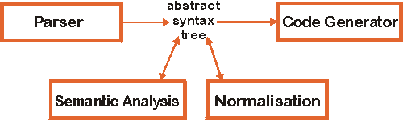
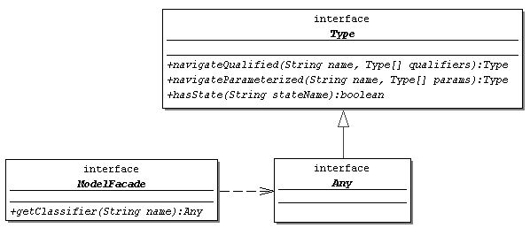

|
|
|
contents:
|
on separate pages:
|
|||||||||||||||||||||||||||||
...introductionThis is a compiler that generates code out of OCL expressions. The generated code evaluates the OCL constraint for a model instance, i.e. a program or data base, at runtime. Constraints formulated during analysis and design can then easily be checked in the implementation.
While the Java code generator that is being implemented makes certain restrictions to the OCL constructs that can be used, the other compiler modules are implemented as close to the OCL specification of UML 1.3 as possible.
If you are interested in more information or want to be notified about changes on this page, send an email to us.
...modulesThe compiler is constructed of modules with separated responsibilities to allow easy reuse or replacement. The architecture is flexible enough to adapt the existing modules to a variety of purposes, such as code generation for other languages or OCL interpretation.

parserThe parser is built using the tool SableCC. It complies to OCL 1.3, with slight changes where inconsistencies in the specification where found (e.g. the specification grammar lacks some literals and the possiblity to express calls to the Collection operation "iterate").
The parser can be examined with the applet. Just enter an OCL expression into the text area on the tab "constraint" and click the "Parse" button.
semantic analysisSemantic analysis consists of simple consistency checks and type checking.
An example for a consistency check is that an expression must have an operation
context (like context Person::getAge()) if and only
if it has an pre or post stereotype.
Besides assuring the correctness of an OCL expression with reference to
some source of model information, the type checker adds type information
to some abstract syntax nodes and to variables. This information is available to
other modules.
The applet automatically
type-checks any OCL expression that is parsed.
Since type checking requires model information, that will only be successful
if the entered OCL expression complies to one of the UML diagrams shown below
the applet unless another model information source is selected on the tab
"model". The source for such model information can of course be adapted in
the compiler by implementing the interfaces ModelFacade
and Any (see interfaces).
As a result of type checking some of the abstract syntax tree's nodes display their type in the tree view (after the second '-'). Basically, all *Expression nodes (Expression, LogicalExpression, ...), all literals and nodes of type PostfixExpressionTail carry type information. Type checking is successful if the top expression node(s) are found to be of type Boolean. This is indicated by a green mark under "Type Check" on the tab "AST".
normalizationTo pave the way for code generation, normalization steps can be applied to the abstract syntax tree. This reduces code generator complexity. Instead of defining one OCL normal form, a set of normalization steps can be fitted together to generate a normal form specific to the desired target language. Examples for normalization steps are:
Explicit qualification of names (age becomes self.age) |
|
| Insertion of iterators | |
| Insertion of type information | |
| Expansion of multiple iterators |
The applet normalizes the abstract syntax tree using a normalization pattern adapted for the Java code generator when the "Normalize" button on the tab "AST" is pressed. The "To Text" button then writes the normalized constraint back into the text field of tab "constraint".
code generatorA Java code generator is part of the OCL compiler. The Java code generated by it uses an class libary that represents the OCL type system. The following two tables show examples of generated code, including the original OCL expression.
context Company inv: manager.age >= 18 |
|
context Company inv: employees->isUnique(name) |
|
The applet allows to generate code by clicking the "Generate" button on the tab "Java".
librarygetFeature in the example code above). It is adaptable
in some respects to different code generators.
interfaces| OCL constraint: the compiler is invoked with a simple String | |
| Model information: information from the UML model is necessary for type checking. This interface is described below. | |
Target code interface: The compiler will produce a String in the
target language (Java, SQL, ...) and will pass this String to the CASE tool
along with some other information (something like "this String is a
postcondition for
Person::getIncome()") |
In the applet, information for the first interface is entered into the text area. The second interface can be configured on the tab "model". By default it is implemented to return information for two default models (see class diagrams below applet). The applet's implementation of the third interface displays the information on the tab "Java".
The following class diagrams shows the internal type representation classes of
the type checker. To adapt this to a new source of model information (e.g.
a CASE tool, or some "hard-wired" model like for the applet) the
interface ModelFacade has to be implemented to return objects
fulfilling the Any interface which defines methods for access to
attributes with and without parameters. An ModelFacade object is
passed to the constructor of the TypeChecker class.

An example of the communication between the OCL compiler's type checker and an implementation of these interfaces is shown in the following sequence diagram.
...release policyThe OCL compiler is available under Free Software Foundation's
LGPL, with the subset used by Argo/UML 0.7.2 alternatively being available
under the BSD public license.
The diploma paper on the compiler is written in English and contains
detailed documentation of the compiler and its modules. Both the compiler and
documentation are available on the download page.
The compiler is adaptable for a vast variety of purposes. This list, which will
hopefully grow soon, shows projects that build on the OCL compiler.
...reuse
| Kendar Dongre at Clemson University is working on an extension of the OCL for the specification of state machines. | |
| An integration of the OCL compiler into the open-source CASE tool Argo/UML is under development. | |
| Sten Löcher develops a SQL code generator at Dresden University of Technology. | |
| The XMI support implemented by Ralf Wiebicke is not really reuse anymore since it is part of the standard configuration of the OCL compiler. |
Last update: May 6, 2000